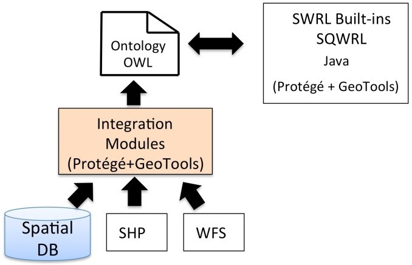
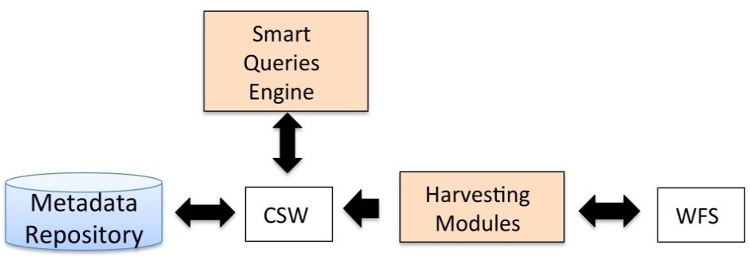

Semantic SDI¶
Ce projet financé sur un BQR-uB (Bonus Qualité Recherche de l'Université de Bourgogne) a fait l'objet des travaux du post-doctorant Helbert Arenas pendant deux ans.
Présentation¶
Afin de mettre en œuvre le principe de "smart queries" au sein d'une ontologie, il faut accéder aux informations stockées dans des répertoires de données différents. Pour atteindre cet objectif, nous avons développé des modules à l'aide de Java et des bibliothèques : GeoTools et Jena/Protégé. GeoTools est une bibliothèque open source sous licence LGPL. Elle est écrite en Java et offre un large éventail de méthodes pour accéder et manipuler des données géospatiales. Elle comprend notamment l’API de traitement spatial JTS comme l'un de ses composants. Geotools comprend également la spécification sur l'encodage de filtre de l'OGC, l'accès à plusieurs formats de fichier de données SIG, supporte les différents systèmes de coordonnées et le parsage de fichier XML. Nous avons développé des modules afin de communiquer avec les répertoires de données suivant: - Shapefiles (format vectoriel ESRI) - PostgreSQL (base de données relationnelle) - OGC WFS (source de données en ligne fournissant de l’information géographique au format vectoriel)

Modules d’intégration de données spatiales
L'architecture mis en œuvre s'appuie sur des ontologies stockées en mémoire et créées à l’aide de l’outil Protégé. Après plusieurs phases de test, nous avons identifié les limites de la montée en charge de notre système. Par conséquent, nous avons décidé de concevoir une nouvelle architecture utilisant un triplestore doté de capacités spatiales pour étendre les limites des ontologies stockées en mémoire. Dans le cadre de cette nouvelle architecture, nous avons décidé de collecter l’information spatiale sur les services respectant la norme OGC (WFS, SOS). Pour ce faire, nous avons concentré notre attention un autre standard de l'OGC, le service de catalogue (CSW). Le service de catalogue stocke des fichiers de métadonnées, décrivant les différents services et ensembles de données. Notre architecture utilise le service de catalogue pour identifier les informations spatiales pertinentes et fournir les informations nécessaires à la requête. Afin d'avoir un meilleur contrôle des informations stockées dans le catalogue, nous avons déployé notre propre service de catalogue et développé un module de moissonnage (collecte de données à partir d’un catalogue). Notre outil de moissonnage envoie une requête GetCapabilities à une liste de service WFS en ligne. Puis, la réponse est traitée pour identifier les ensembles de données disponibles afin de créer un fichier de métadonnées approprié au format ISO 19115. Le fichier de métadonnées est ensuite chargé dans notre catalogue.

Module de moissonnage des métadonnées
Publications¶
- H. Arenas, B. Harbelot, C. Cruz, Multidimensional Land Cover Change Analysis using Vector Change and Land Cover Taxonomies, Spatial Statistics: Emerging Patterns, Poster, 9-12 June 2015, Avignon, France
- H. Arenas, B. Harbelot, C. Cruz, Multidimensional Land Cover Change Analysis using Vector Change and Land Cover Taxonomies, Spatial Statistics: Emerging Patterns, Poster, 9-12 June 2015, Avignon, France
- Helbert Arenas, Benjamin Harbelot and Christophe Cruz, LC3 A Spatial-temporal Data Model to Study Qualified Land Cover Changes, Chapter Book: Land Use and Land Cover Semantics - Principles, Best Practices and Prospects, Editors: Ola Ahlqvist, Krzysztof Janowicz, Dalia Varanka, Steffen Frit, CRC Press / Taylor & Francis, August 3, 2015, ISBN 9781482237399, http://www.crcpress.com/product/isbn/9781482237399
- Helbert Arenas, Benjamin Harbelot, and Christophe Cruz, A Semantic Web Approach for Geodata Discovery, Jeffrey Parsons Dickson Chiu (Eds.), Advances in Conceptual Modeling, ER 2013 Workshops, LSAWM, MoBiD, RIGiM, SeCoGIS, WISM, DaSeM, SCME, and PhD Symposium, Hong Kong, China, November 11-13, 2013, Revised Selected Papers, Lecture Notes of Computer Science LNCS 8697, 2014. http://www.springer.com/computer/lncs?SGWID=0-164-6-1068921-0 (Q2)
- Helbert Arenas, Benjamin Harbelot, Christophe Cruz, A Semantic Analysis of Moving Objects Using as a Case Study Maritime Voyages from Eighteenth and Nineteenth Centuries, GeoProcessing 2014, The Sixth International Conference on Advanced Geographic Information Systems, Applications, and Services, pp 45-50, 2014
- Arenas, H., Harbelot, B., and Cruz, C., A Semantic Web Approach for Geodata Discovery. 7th International Workshop on Semantic and Conceptual Issues in GIS (SeCoGIS 2013).